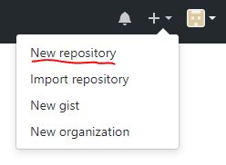
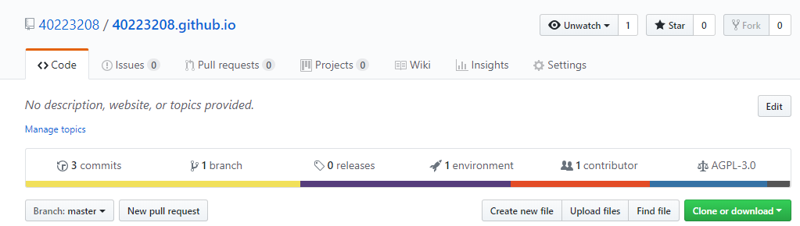
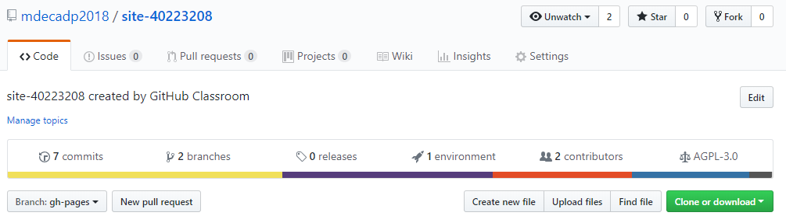
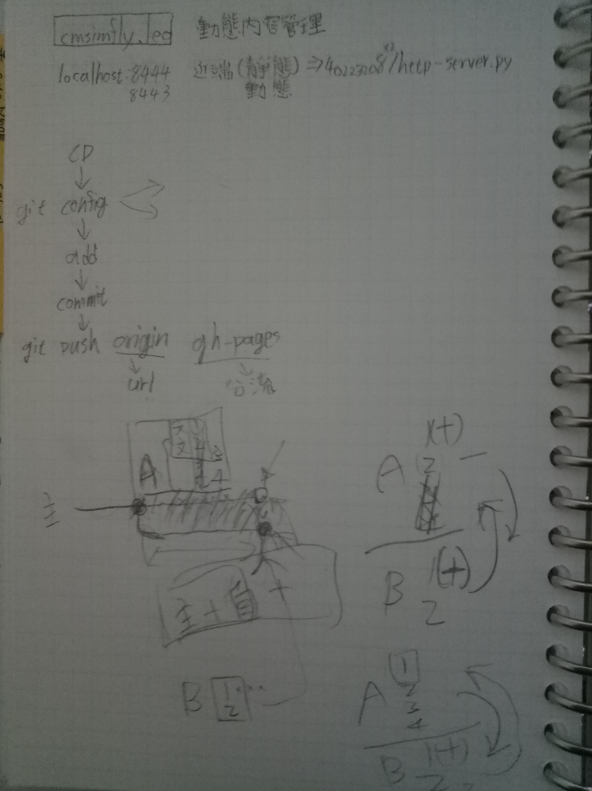

1.登入 Github 帳號，並建立自己的倉儲，與倉儲鏈結
(建立新倉儲)

(建立好自己倉儲)

(在教師倉儲底下連接一個作業倉儲、並修改Branch為gh-pages)

2.開啟靜態(8444)、動態網頁(8443)
透過"python wsgi.py"指令啟動近端(localhost:8443)
執行"http-server.py"資料夾啟動遠端(localhost:8444)
3.git的常用指令
git config —-global user.name “github 帳號”
git config —-global user.email “GitHub email”
git config http.proxy http://proxy_server:3128
git status
git add .
git commit -m “message”
git push
git clone repo_url local_dir
git checkout <branch>
git reset
git revert
git diff
git branch
git merge上課筆記:

教師參考影片: movie1 、movie2 、movie3
自我拍攝影片:youtube1
國立虎尾科技大學機械設計工程系計算機程式 - 一乙第八週第三部分, 說明如何利用 Eric6 IDE 建立所需的 calculator 計算機程式對話表單. 過程中主要學習如何啟動 Eric6, 如何建立 Eric6 專案, 如何切換 Sources tab 與 Form tab, 如何在進入 Qt Designer 後利用格點布局, 建立按鈕與 Line Edit 部件.